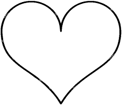

För att du ska veta att dina pengar hanteras rätt granskas Katthemmets verksamhet av en auktoriserad revisor och vi har även ett s.k. 90-konto fr.o.m. december 2009, vilket också ställer krav på att pengarna hanteras korrekt.
Vill du stödja oss genom att skicka in ett bidrag? Alla bidrag hjälper! För varje bidrag vi får in kan vi ge ännu bättre vård och hjälp för de katter vi får in. Vi kan driva verksamheten vidare och fler hemlösa katter kommer få ett nytt hem. Du kan skicka in valfritt belopp till antingen
PG nummer: 076 076 607
Swisha till: 0304823077
Vi behöver hjälp av volontärer till vårt katthem, som drivs helt med ideellt arbete. För att få detta att fungera är vi beroende av att vara många djurvänner som ställer upp och tar hand om våra katter. Som volontär utför man bland annat de dagliga sysslor som behöver göras för katterna, som exempelvis att ge dem mat, rengöra deras utrymmen och umgås med dem genom lek och kel. Vi har två arbetspass varje dag, ett på förmiddagen (ca kl 10-14) och ett på eftermiddagen (ca kl 18-21). Volontärarbetet kan även innebära att man hjälper till på fältet, exempelvis med att chipavläsning eller att fånga in förvildade katter. Intresserad? fyll i formuläret nedan. Skriv med hur ofta du kan arbeta och vilka pass som passar dig bäst.
Du kan okså bli månadsgivare hos oss, fyll i formuläret nedan som "Månadsgivare" så skickar vi inbetalningskort och ett informationsblad. Att bli månadsgivare hos oss innebär att man skänker oss ett valfritt belopp varje månad, det kan vara från 50 kr och uppåt. Om man föredrar att betala kvartals- eller halvårsvis går det naturligtvis lika bra.Faddrarna är basen för ekonomin i Stockholms Katthem. Utan våra godhjärtade faddrar skulle det inte vara möjligt att bedriva verksamheten i nuvarande omfattning, trots den stora mängd ideellt arbete som utförs av våra volontärer. Den viktiga insats som våra faddrar gör kan inte nog uppskattas. Det är till stor del deras gåvor som gör det möjligt för oss att bekosta foder, sand, veterinärvård, leksaker,
Eller vill du vara med och hjälpa på annat sätt? Vill du hjälpa nån av våra katter att få ett nytt hem? Alla katter väntar på att bli hämtade av en ny familj. Nedan i forumäret kan du fylla i intresseanmälan om att få adoptera, VIKTIGT: En intresseanmälan är inte bindande, så skulle man av någon anledning ångra sig, meddela oss snarast per telefon eller mail så att någon annan får möjlighet att boka katten. Du finner kontaktuppgifter nedan. Skriv med vilken/vilka katter du vill få ta hem så återkommer vi med en besökstid och reserverar katten åt dig.